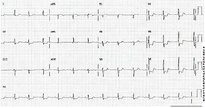
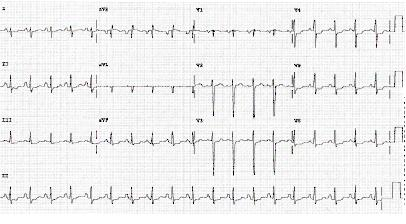
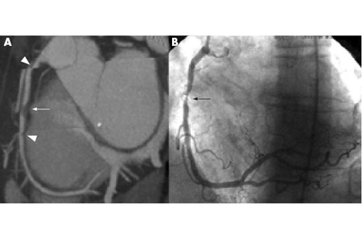
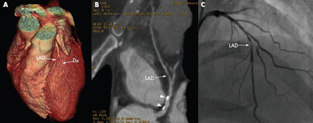

![]()
Patients with suspected acute coronary syndrome (ACS) require urgent evaluation. It is essential to establish whether the symptoms are a manifestation of an ACS and, if so, how likely it is for an adverse clinical event to occur. [1] Physicians need to first establish the patient's risk and follow current guidelines according to the initial risk assessment to choose an appropriate management strategy. The initial risk assessment includes the history, examination, ECG, and cardiac biomarkers. [1] [38]
ECG is indicated as the first-line investigation in all patients and should not be delayed to take the history, carry out an examination, or do other diagnostic tests. A 12-lead ECG should be performed and interpreted within 10 minutes of the patient arriving at the emergency facility. It is critical to immediate management to exclude ST-elevation myocardial infarction (STEMI). NSTEMI is indistinguishable from other types of ACS (STEMI or unstable angina) until ECG and biomarkers become available, because their pathophysiology and presentation are similar. [1] Typical ECG findings may be present, but many patients have a normal ECG at presentation and therefore serial ECGs, initially at 15- to 30-minute intervals, should be performed to detect the potential for development of ST-segment elevation or depression. ECG findings in NSTEMI may be highly variable. Typically >1 mm of ST depression is present in 2 or more contiguous leads. Other potential findings include dramatic new T-wave inversions (Wellens waves) or minor non-diagnostic changes, or the ECG may be normal. ECG changes of ST elevation or new left bundle branch block should be evaluated as STEMI.  [Figure caption and citation for the preceding image starts]: ECG showing ST depression From the personal collection of Dr Syed W. Yusuf and Dr Iyad N. Daher, Department of Cardiology, University of Texas, Houston; used with permission [Citation ends].  [Figure caption and citation for the preceding image starts]: ECG showing ST depression From the personal collection of Dr. Syed W. Yusuf and Dr. Iyad N. Daher, Department of Cardiology, University of Texas, Houston; used with permission [Citation ends].
Continuous 12-lead ECG monitoring is a reasonable alternative to serial 12-lead recordings in patients whose initial ECG is non-diagnostic. [1] Supplemental ECG leads V7 to V9 may be useful in patients with non-diagnostic initial ECGs to rule out myocardial infarction (MI) due to left circumflex occlusion. [1] Less commonly, the ECG may reveal a tachyarryhthmia or bradyarrhythmia precipitated by the MI.
Patients presenting with chest pain or discomfort need immediate assessment for current or past history of coronary artery disease (CAD) and traditional risk factors (e.g., age, sex, diabetes, hypertension, cocaine use) to triage them as high priority. [1] ACS is highly likely if there is a history of chest or left arm pain similar to previously documented angina pain, and a history of CAD (including MI). Angina pain is typically deep, poorly localised chest or arm pain described as a sensation of tightness, heaviness, aching, burning, pressure, or squeezing. The pain is most often retrosternal and can often radiate to the left arm, but may also radiate to the lower jaw, neck, both arms, back, and epigastrium, where it may mimic heartburn. It is associated with exertion or emotional stress (or less commonly with cold exposure) and relieved by rest or sublingual glyceryl trinitrate. [1]
Diaphoresis is a common associated symptom. Shortness of breath is also common and is probably secondary to diminished cardiac output. Patients may express anxiety or appear anxious. They may also report a feeling of impending doom. Classically, events peak at around 8 a.m., presumably due to haemodynamic stress caused by increased serum cortisol, adrenergic hormones, and platelet aggregation.
Patients may present with a range of atypical symptoms, any of which may be the sole presenting symptom. These include weakness, nausea, vomiting, abdominal pain, and syncope. These are more common in women, older people, and those with diabetes or chronic kidney disease. Examination findings are usually non-specific but may reveal hypertension or hypotension, the presence of third and fourth heart sounds, and paradoxical splitting of the second heart sound. Signs of heart failure (raised jugular venous pressure, bilateral crepitations on auscultation of the lungs) or cardiogenic shock may also be present, and these signify a worse prognosis.
In addition to the ECG, the following tests must also be performed in all patients.
Therapeutic trial of sublingual glyceryl trinitrate: patients with ongoing ischaemic discomfort should receive a trial of sublingual glyceryl trinitrate (0. 4 mg) every 5 minutes for a total of 3 doses, after which the need for intravenous nitroglycerin should be assessed, if not contraindicated. Nitrates should be avoided in patients with hypotension, suspected right ventricular infarction, or recent phosphodiesterase inhibitor use.
Cardiac troponins or other cardiac markers: a rise in the levels of cardiac troponins (>99th percentile of normal) are diagnostic for the condition. The test should be repeated 3 to 6 hours after symptom onset because levels may be normal initially. This test is readily available at most institutions. If it is not available, the typical rise and fall of other cardiac markers (CK, CK-MB, and/or myoglobin) can be used. Patients with a high index of suspicion who have negative serial ECGs and cardiac enzymes should be closely monitored in a telemetry or chest pain unit, as it may take time for cardiac markers to rise. [1] Additionally, there have been recent investigations into novel cardiac biomarkers, such as cardiac myosin-binding protein C (cMyC), which may improve discriminatory power of cardiac biomarkers, but these are not readily available. [39]
Chest x-ray: indicated to determine whether congestive heart failure (CHF) is present and to exclude non-cardiac causes for chest pain.
FBC: haemoglobin and haematocrit measurements may help to evaluate a secondary cause of NSTEMI (e.g., acute blood loss, anaemia) and to evaluate thrombocytopenia to estimate risk of bleeding.
Urea and serum creatinine: creatinine clearance should be estimated in NSTEMI patients and the doses of renally cleared drugs should be adjusted appropriately. In chronic kidney disease patients undergoing angiography, iso-osmolar contrast agents may be preferred. [1] [4]
Serum electrolytes: electrolyte derangements may predispose to cardiac arrhythmias.
Liver function tests: useful if treatment with drugs that undergo hepatic metabolism is considered.
ACS management requires continuous risk stratification for death or recurrent MI. The American College of Cardiology/American Heart Association recommend that patients with suspected ACS are risk stratified based on the likelihood of ACS and adverse outcome(s) to further triage and assist in the selection of treatment options. [1] A number of risk scores exist which incorporate a number of variables such as clinical history, angina symptoms and equivalents, physical examination, ECG, renal function, and troponin levels. These variables can be used to estimate the risk of death and non-fatal cardiac ischaemic events, for example, using the TIMI risk score Thrombolysis in Myocardial Infarction (TIMI) Score for Unstable Angina Non ST Elevation Myocardial Infarction or the GRACE risk model. [1] [40] GRACE Score for Acute Coronary Syndrome Prognosis
The TIMI risk score is composed of 7 risk indicators rated on presentation. One point is awarded for the presence of each of the following criteria:
Age >65 years
Presence of ≥3 CAD risk factors
Prior coronary stenosis >50%
ST-segment deviation on ECG
Elevated serum cardiac biomarkers
At least 2 anginal episodes in the past 24 hours
Use of aspirin in the past 7 days.
Patients with a TIMI score of 0 to 2 are low risk, 3 to 4 are intermediate risk, and 5 to 7 are high risk. All-cause mortality, rate of MI, and rate of urgent revascularisation at 14 days increase in proportion to the number of risk factors present on the TIMI score.
The GRACE risk model is a web-based tool that can be used to predict in-hospital and post-discharge mortality or MI in patients following an initial ACS.
The Killip classification is another tool that can be used for risk stratification. This classification system risk stratifies patients with acute MI based on clinical evidence of left ventricular failure:
Class I: no evidence of CHF
Class II: presence of a third heart sound gallop, basilar rales, or elevated jugular venous pressure
Class III: presence of pulmonary oedema
Class IV: cardiogenic shock.
The HEART Score incorporates elements of the patient’s history, ECG, age, risk factors, and troponin and is used for patients in the accident and emergency department setting to assess risk of acute MI, percutaneous coronary intervention (PCI), coronary artery bypass graft (CABG), and death within 6 weeks of initial presentation. [41] HEART Score
Following initial work-up and risk stratification, a range of additional investigations may be considered.
Brain natriuretic peptide (BNP) and N-terminal pro-BNP (NT-pro-BNP): measurement of BNP or NT-pro-BNP may be considered to supplement assessment of global risk in patients with suspected ACS, particularly cardiogenic shock associated with MI type 1. [1]
Lipid profile: this test is indicated in the first 24 hours of admission to hospital to assess for lipid abnormalities and therefore the need for any lipid-lowering therapy.
Angiography: urgent and immediate angiography is indicated if patients do not stabilise with intensive medical treatment. [1] Indications include recurrent symptoms (refractory angina), ischaemia despite adequate medical treatment, high risk (e.g., CHF, malignant ventricular arrhythmias), or non-invasive test findings (significant left ventricular dysfunction, ejection fraction <0.35, large anterior or multiple perfusion defects). Patients with a history of anaphylaxis or allergy to contrast must be pre-medicated prior to angiography.  [Figure caption and citation for the preceding image starts]: 64-slice CT angiography (A) and conventional angiography (B) showing a high-grade lesion in the mid-right coronary artery, indicated by the arrows. The arrowheads show artefacts that may be mistaken for lesions From: Schussler JM and Grayburn PA. Heart, 2007;93:290-297 [Citation ends].  [Figure caption and citation for the preceding image starts]: 64-slice CT angiography of a patient with stable angina showing 3D reconstruction (A), curved reformatted images (B) and confirmation of a high-grade lesion on conventional angiography (C). The arrowheads show calcified plaques. Dx= diagnosis From: Schussler JM and Grayburn PA. Heart, 2007;93:290-297 [Citation ends].
Echocardiography: cardiac ultrasound is also useful to evaluate ischaemic complications and other causes of chest pain (i.e., pulmonary embolism, effusion, or acute valvular pathology) and is indicated after initial assessment. Cardiac ultrasound can demonstrate ischaemic changes even before ECG changes appear. The presence of regional wall motion abnormalities and decreased left ventricular function provides evidence for ACS. Also important, normal cardiac function and viability have a very high negative predictive value and practically exclude acute MI. Consequently, cardiac ultrasound may be useful for early triage of patients with suspected MI. [3]
Stress testing: stress testing, including treadmill exercise testing, may be useful and is recommended in low and intermediate pre-test probability with a normal ECG and normal high sensitivity biomarkers to assist with guiding the need for an invasive strategy. [1] [42] [43] The sensitivity and specificity of these tests increase when combined with either nuclear imaging to look for myocardial perfusion defects or echocardiography to assess wall motion abnormalities. The key positive finding on nuclear imaging stress tests is the presence of a reversible defect. This is an area of myocardium that becomes deprived of perfusion during increased myocardial demand and reperfuses on stopping the activity. This signifies stenosis within the coronary circulation that may be treated with percutaneous coronary intervention or CABG. Sub-maximal exercise testing can be performed at 4 to 7 days after myocardial infarction, while symptom limited testing can be performed at 14 to 21 days post-myocardial infarction, when the patient has been free of active ischaemic or heart failure symptoms. [44]
Coronary CT angiography (CCTA): this may provide non-invasive evaluation of coronary anatomy and atherosclerosis. Renal failure is a relative contraindication. Patients with contrast allergy may be pre-medicated prior to angiography. [45] Due to the high negative predictive value of CCTA, evidence suggests that CCTA is useful in patients with low to moderate risk of NSTEMI. When compared with the standard care of low-risk patients (observation, serial enzymes followed by stress testing) CCTA reduced time to diagnosis, reduced length of emergency department stay, and had similar safety. [46] CCTA is not indicated for patients with high-risk features (i.e., ischaemic ECG changes, positive cardiac markers). [47] [Figure caption and citation for the preceding image starts]: 64-slice CT angiography of a patient with stable angina showing 3D reconstruction (A), curved reformatted images (B) and confirmation of a high-grade lesion on conventional angiography (C). The arrowheads show calcified plaques. Dx= diagnosis From: Schussler JM and Grayburn PA. Heart, 2007;93:290-297 [Citation ends]. [Figure caption and citation for the preceding image starts]: 64-slice CT angiography (A) and conventional angiography (B) showing a high-grade lesion in the mid-right coronary artery, indicated by the arrows. The arrowheads show artefacts that may be mistaken for lesions From: Schussler JM and Grayburn PA. Heart, 2007;93:290-297 [Citation ends].
Use of this content is subject to our disclaimer